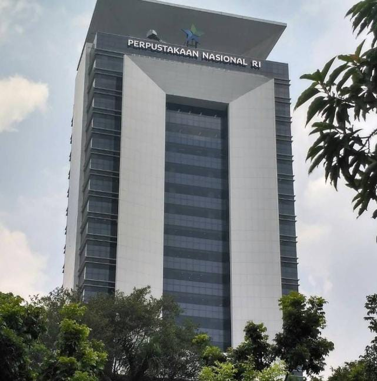

ruangan, bagian sebuah Gedung ataupun gedung itu sendiri yang digunakan untuk menyimpan buku dan terbitan lainnya yang biasanya disimpan menurut tata susunan tertentu untuk digunakan pembaca, bukan untuk dijual. Dalam pengertian buku dan terbitan lainnya termasuk di dalamnya semua bahan cetak, buku, majalah, laporan, pamflet, prosiding, manuskrip (naskah), lembaran musik, berbagai karya musik, berbagai karya media audio visual seperti film, slid ( slide), kaset, piringan hitam, bentuk mikro seperti mikrofilm, mikrofis, dan mikro buram ( micro opaque ). Webster menyatakan bahwa perpustakaan merupakan kumpulan buku, manuskrip, dan bahan pustaka lainnya yang digunakan untuk keperluan studi `atau bacaan, kenyamanan, atau kesenangan.
Jenis-Jenis Perpustakaan
-

- Perpustakaan Nasional
- Perpustakaan Umum
- Perpustakaan Sekolah
- Perpustakaan Khusus
- Perpustakaan Perguruan Tinggi
Perpustakaan nasional, perpustakaan ini didirikan oleh suatu negara yang memiliki fungsi utama yang sangat luas seperti menyimpan, mencetak, menghimpun, menetapkan sebuah kebijakan nasional, umum dan kebijakan teknis pengelolaan, melaksanakan pembinaan, pengembanan evaluasi dan koordinasi dan juga melakukan kerja sama serta mengembangkan standar nasional perpustakaan untuk perpustakaan dibawahnya. Pepustakaan nasional dapat dikatakan sebagai perpustakaan pusat utama yang terlengkap akan koleksi dan pelayanannya sehingga tak jarang perpustakaan ini sepi akan pengunjung. Jenis koleksi yang berada di perpustakaan ini sangat amat banyak dan lengkap sesuai dengan kebutuhan pemustakanya mulai dari manuskrip, koleksi-koleksi langka, bahkan perpusnas dipercaya untuk menyimpan koleksi-koleksi bersejarah, selain koleksi langka perpunas memiliki koleksi digital yang dapat akses dengan mudah untuk masyarakat. Perpustakaan nasional menjadi acuan dari perpustakaan-perpustakaan yang tersebar disuatu negara. Perpustakaan ini biasanya terletak di pusat ibukota dan bertanggung jawab langsung kepada presiden.

Perpustakaan umum, perpustakaan ini diperuntukkan bagi masyarakat umum sebagai sarana pembelajaran sepanjang hayat tanpa membedakan usia, jenis kelamin, suku, ras, agama dan status sosial-ekonomi. Selain tidak membedakan pengunjung, koleksi yang disediakan oleh perpustakaan umum memiliki ragam jenis yang banyak untuk menyesuaikan kebutuhan pengunjungnya. Perpustakaan umum biasanya didanai oleh dana umum yang berasal dari masyarakat yang dikumpulkan melalui pajak dan pemerintah, sehingga perpustakaan ini diciptakaan berasal dari umum dan dapat dimanfaatkan oleh siapa saja atau terbuka untuk umum

Perpustakaan sekolah, ialah perpustakaan sebagai suatu sarana dan fasilitas dalam penyelenggaraan sekolah. Perpustakaan sekolah terletak di lingkungan sekolah yang bertujuan untuk memudahkan para murid mendapatkan informasi dan membantu tugas sekolah. Perpustakaan sekolah diharapkan dapat menunjang proses belajar mengajar dengan menyediakan koleksi yang relevan dengan pelajaran-pelajaran atau kurikulum di sekolah. Perpustakaan sekolah ini dapat ditemukan di sekolah dasar (SD), sekolah menengah pertama (SMP) dan di sekolah menengah Atas (SMA) atau sejenisnya.
Perpustakan Khusus adalah perpustakaan yang diperuntukkan secara terbatas bagi pemustaka di lingkungan lembaga pemerintah, lemabaga masyarakat, lembaga pendidikan agama, instansi tertentu dan badan korporasi swasta. Tujuan didirikan perpustakaan khusus ini tidak lain untuk memajukan dan menyediakan informasi bagi pengguna setempat. Perpustakaan khusus biasanya memiliki koleksi yang berisi subjek yang berkaitan dengan instansinya selain itu pemanfaatan koleksinya sangat terbatas tergantung dari kebijakan perpustakaan itu sendiri apakah membolehkan koleksinya dipinjamkan atau dibaca oleh pemustaka eksternal.
Perpustakaan Perguruan Tinggi, perpustakaan ini terletak di lingkungan perguruan tinggi. Biasanya perpustakaan perguruan tinggi memiliki banyak perpustakaan yang tersebar diberbagai fakultas walaupun dengan demikian perpustakaan tetap memiliki satu naungan pusat utama yang mengendalikan pusat-pusat fakultas tersebut. Perpustakaan perguruan tinggi memiliki tujuan sebagai pelaksana Tri Dharma perguruan tinggi dalam menyajikan fungsi pendidikan, penelitain dan pengabdia masyarakat. Koleksi yang berada di perpustakaan ini tentu memiliki ciri khas tersendiri yakni koleksi-koleksi yang relevan dengan jurusan-jurusan. Pengguna perpustakaan ini biasanya dari kalangan mahasiswa dan juga dosen dalam mencari informasi untuk penelitian ataupun tugas kuliah.
Sumber Bacaan: Ini merupakan link sumber bacaan